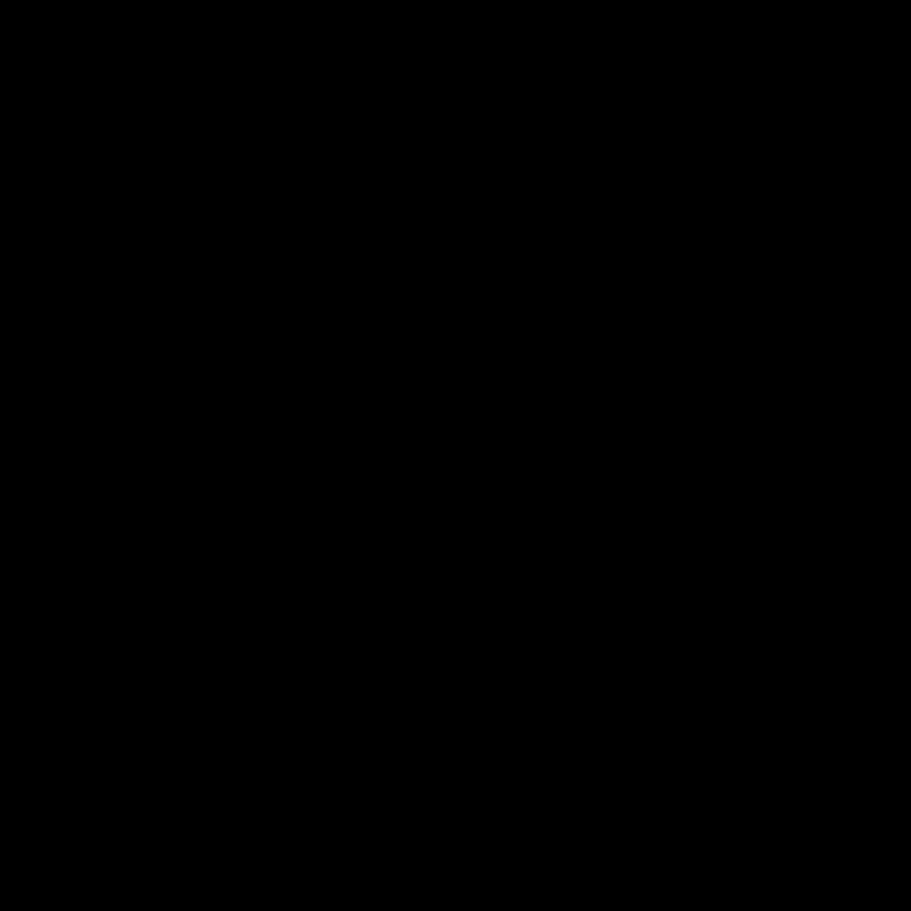

01 · Слушаем
Название буквы и короткое слово. Первая буква выделена цветом.

Kids English · ABCАнглийский алфавит и первые слова: слушаем, повторяем по желанию и играем вместе с дракончиком.
Как играемНазвание буквы и короткое слово. Первая буква выделена цветом.
Одно понятное задание: найти нужную букву среди трёх.
После алфавита — 18 слов. Ставьте буквы в любом порядке, касанием или перетаскиванием.
Буквы не требуют строгого порядка. Ошибки можно спокойно исправить, таймера и штрафов нет. Повторение вслух добровольное: приложение не записывает голос и не оценивает произношение.
Полный курс открывает остальные буквы и игры со словами после завершения алфавита. Подписок нет. Цена появится перед покупкой. Сейчас готовим приложение к выпуску.
Русский интерфейс, озвучка на американском английском. Все записи встроены и работают офлайн. Прогресс хранится на устройстве. Без рекламы, аналитики и регистрации. Покупки и внешние ссылки находятся в родительском разделе за заданием для взрослого. Достаточно 5–10 минут вместе. Это знакомство с названиями букв и словами, не полный курс фонетики.